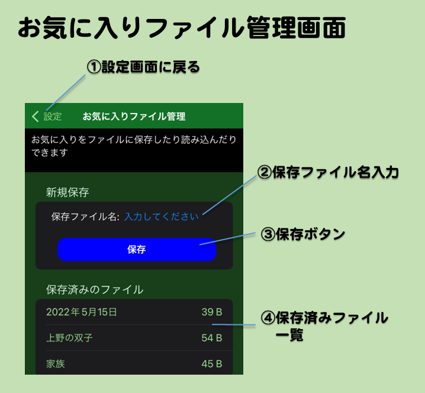

- お気に入りファイル管理画面とは
- 設定画面でお気に入りファイル管理へというボタンをタップすると表示される画面です。お気に入りをファイルに保存したり、読み込んだりできます。
- 画面の説明
- ①設定画面に戻るボタン
- 設定画面に戻ります。
- ②保存ファイル名入力欄
- ファイルを保存する前にファイル名を入力します。何も入力しなかった場合は今日の日付が入ります。
- ③保存ボタン
- 現在のお気に入りデータを新しいファイルに保存します。保存ファイル名入力欄に入っている名前で保存されます。
- ④保存済みファイル一覧
- 保存したファイルの一覧が表示されます。左側にファイルの名前、右側に参考情報としてファイルのサイズが表示されます。
- 項目をタップすると、コンテキストメニューが表示され、下記の機能を選択できます。
- 共有...ファイルを他のアプリに共有します。
- 上書き保存...現在のお気に入りデータをこのファイルに上書きします。
- 読み込み...ファイルの内容を読み込みます。現在登録している情報は消えるので注意してください。
- 追加読み込み...現在登録している情報に追加してファイルの内容を読み込みます。
- 名前変更...ファイルの名前を変更できます。
- 削除...ファイルを削除します。
- 共有について
-
- メモ帳などに共有してファイル保存すると、そのAppでそのファイルを共有することでほかのiPhoneの当Appにユーザー登録データを読み込ませることができます。
メールなどに添付して他のユーザーとデータを共有することもできます。
- 共有の時のファイル名は pandaBirthdayFavorites_XXXX.txt （XXXXの部分は保存ファイル入力欄に入力した名前） です。
- 他のアプリから共有されたお気に入りファイルは、この保存済みのファイル一覧に登録されます。
- 共有するときにすでに同じ名前のファイルがあった場合は、ファイル名の最後に "_" を追加します。